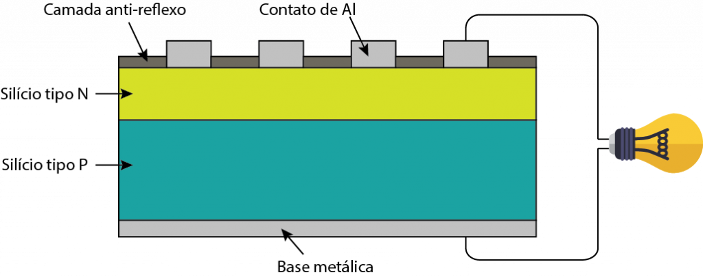

Simplificando, um módulo fotovoltaico é composto de unidades menores chamadas de células fotovoltaicas. As células funcionam através da absorção de fótons, elementos de energia presentes na luz solar. Os fótons absorvidos excitam elétrons que fluem através das células fotovoltaicas, gerando eletricidade. Cada célula fotovoltaica é basicamente um sanduíche feito de duas fatias de material semicondutor, normalmente silício. Durante a sua fabricação, o silício é dopado (adição intencional de impurezas em um material semicondutor com a finalidade de alterar suas propriedades elétricas) com outros materiais dando para cada fatia do material uma carga elétrica positiva ou negativa. Essa diferença de carga de diferentes polaridades da origem a um campo elétrico, que é essencial para o funcionamento da célula fotovoltaica. Mais especificamente, a fatia superior da célula é dopada com o elemento fósforo, que adiciona elétrons extras ao material, dando àquela camada uma carga negativa chamada de “tipo N”. Já a fatia inferior da célula é dopada com o elemento boro, que resulta em menos elétrons, de carga positiva chamada de “tipo P”. Essa diferença de polaridade dá origem ao campo elétrico na junção das camadas de silício.Outros componentes da célula transformam os elétrons excitados pelos fótons absorvidos em corrente elétrica e, consequentemente, em energia. Condutores metálicos sobre as células conectam uma célula a outra coletando os elétrons e os transferindo para os cabos. Assim, os elétrons podem fluir como em qualquer outra fonte de eletricidade.
O método de fabricação das células de Si monocristalino é chamado de Czochralski, um processo no qual um monocristal semente dá origem a um tarugo de Si monocristalino. A eficiência dos módulos produzidos com essas células fica em torno de 17% e a vida útil, considerando 80% da eficiência inicial, de 25 anos. Recentemente pesquisadores japoneses da Kaneda Corp. atingiram o recorde de eficiência de 26,3%, um avanço se considerarmos o limite teórico de 29%.

A tecnologia de filmes orgânicos tem o potencial de gerar energia a baixo custo. Atualmente esse tipo de célula fotovoltaica é comercializado pela startup brasileira Sunew e tem aplicação no revestimento de fachadas de edifícios. As células podem atingir eficiências próximas de 11%. A maior barreira para a tecnologia é a sua vida útil reduzida e a eficiência limitada.